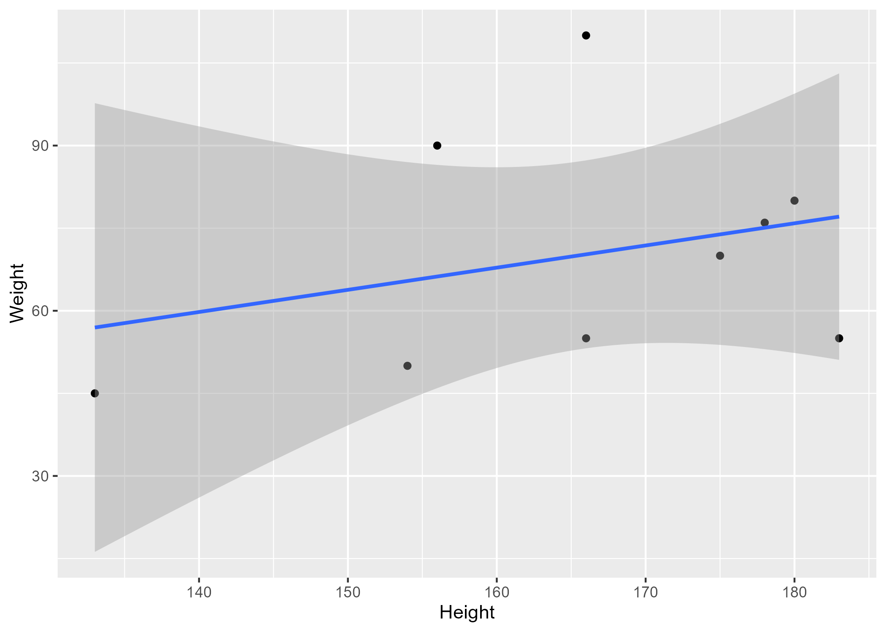

| skim_type | skim_variable | n_missing | complete_rate | factor.ordered | factor.n_unique | factor.top_counts | numeric.mean | numeric.sd | numeric.p0 | numeric.p25 | numeric.p50 | numeric.p75 | numeric.p100 | numeric.hist |
|---|---|---|---|---|---|---|---|---|---|---|---|---|---|---|
| factor | Gender | 0 | 1 | FALSE | 3 | M: 4, F: 3, O: 2 | NA | NA | NA | NA | NA | NA | NA | NA |
| numeric | Height | 0 | 1 | NA | NA | NA | 165.66667 | 15.97655 | 133 | 156 | 166 | 178 | 183 | ▂▁▃▃▇ |
| numeric | Weight | 0 | 1 | NA | NA | NA | 70.11111 | 21.24526 | 45 | 55 | 70 | 80 | 110 | ▇▂▃▂▂ |
Example Quarto slides
Overview
- A few simple slides using the
revealjs(html) format. - For other formats (e.g. Powerpoint, or Beamer/pdf), see here.
Example slide
This shows the summary table. It is pulled in as R chunk.
Example slide
This shows a figure created by the analysis script. It is inserted using Markdown (not knitr code, but that would be possible too).

Example slide
This shows the model fitting results as table.
| term | estimate | std.error | statistic | p.value |
|---|---|---|---|---|
| (Intercept) | 149.2726967 | 23.3823360 | 6.3839942 | 0.0013962 |
| Weight | 0.2623972 | 0.3512436 | 0.7470519 | 0.4886517 |
| GenderM | -2.1244913 | 15.5488953 | -0.1366329 | 0.8966520 |
| GenderO | -4.7644739 | 19.0114155 | -0.2506112 | 0.8120871 |
Example slide with reference
This paper (Leek & Peng, 2015) discusses types of analyses.
References
Leek, J. T., & Peng, R. D. (2015). Statistics. What is the question? Science (New York, N.Y.), 347(6228), 1314–1315. https://doi.org/10.1126/science.aaa6146